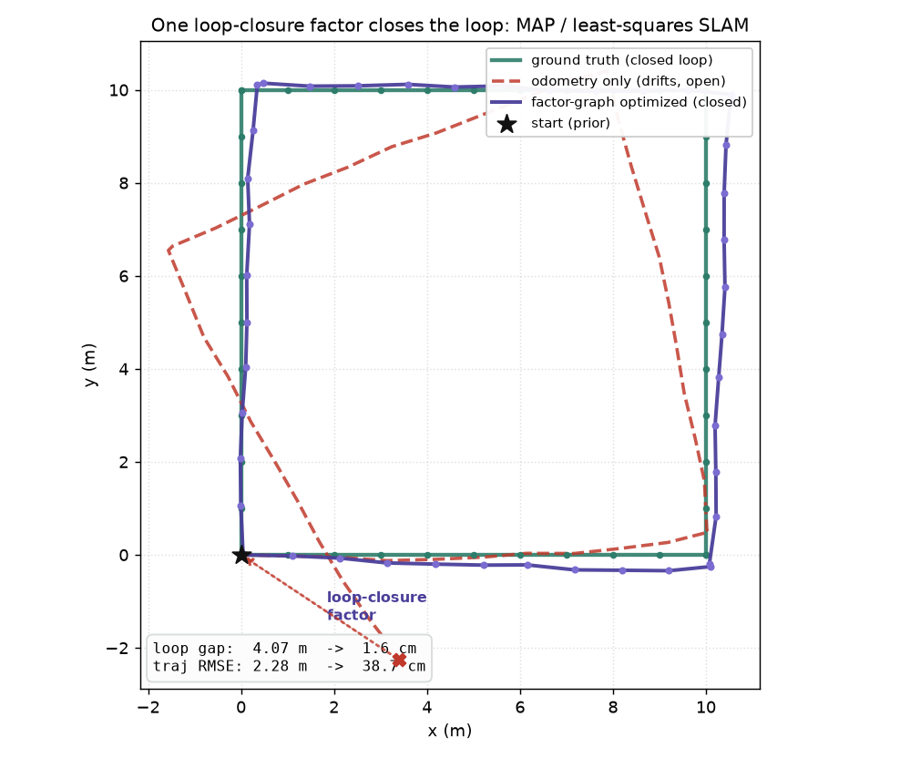

The maximum-a-posteriori view of SLAM — poses are variables, measurements are factors, and the best map is the least-squares solution that explains them all at once.

A pose-graph is a factor graph: each robot pose is a node (variable), and each measurement is a factor — a soft constraint pulling the poses toward agreement. Here a prior anchors the first pose, odometry factors constrain consecutive poses, and one loop-closure factor constrains the last pose to the first when the robot returns. The maximum-a-posteriori estimate of every pose is the nonlinear least-squares solution over all factors; we solve it with Gauss-Newton — linearize each factor's residual, stack the sparse Jacobian, solve the normal equations (JᵀJ)Δx = −Jᵀr, apply the update wrapping angles, and iterate.